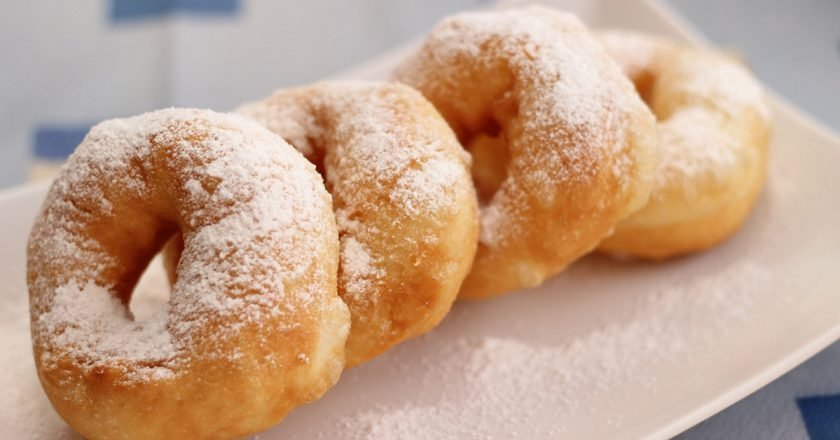

Пышки ленинградские

Кто бывал на Большой Конюшенной в Санкт-Петербурге,тот пробовал самые вкусные пышки.
Хрустящая корочка и воздушный, пористый мякиш, обильно посыпанные сахарной пудрой пышки - это очень вкучное лакомство! Не забудьте про чашку кофе с молоком, с ним вдвойнее вкуснее.
ИНГРИДИЕНТЫ:
- Мука пшеничная 265 г
- Дрожжи сухие 8 г
- Соль 2,5 г
- Сахар 30 г
- Вода 150 г
- Яйцо 1 шт
- Масло сливочное 15 г
- Сахарная пудра для обсыпки
- Растительное масло для фритюра
ШАГИ:
- В миску с мукой добавить, сахар, соль и дрожжи, перемешать. Влить теплую воду, добавить яйцо и мягкое масло, замесить липкое тесто.
- Накрыть миску с тестом пищевой пленкой и убрать в теплое место на 3 часа, каждый час обминая его.
- Смазав руки растительным маслом, отщипывать по кусочку теста размером с грецкий орех и формировать шарики.
Выложить заготовки на доску под полотенце и дать им подойти.
- Разогреть в сотейнике растительное масло. В каждом шарике пальцем проделать отверстие и немного растянуть его.
- Жарить пышки в масле до румяного цвета, затем выложить на бумажное полотенце. Готовые пышки посыпать сахарной пудрой.